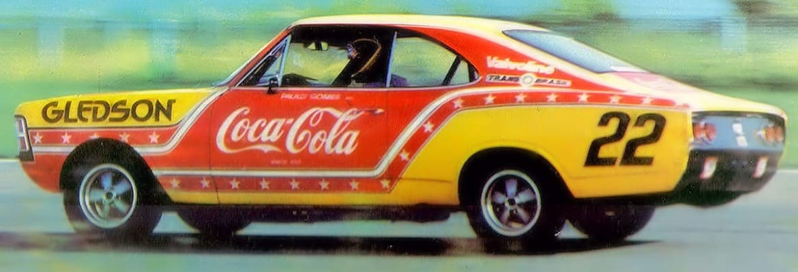

2. Modelos em Destaque


Acesso ao arquivo completo:
Clique aqui para outros modelosVeículos Clássicos de Competição do Brasil
Acesso ao arquivo completo:
Clique aqui para outros modelosO "vale-tudo" das pistas. Conhecida pela liberdade mecânica extrema, permitia que Fuscas e Opalas fossem modificados até o limite, criando monstros aerodinâmicos e motores explosivos.
A prova de resistência suprema. Inspirada na Mille Miglia italiana, testava a durabilidade das máquinas nacionais em Interlagos, muitas vezes durando mais de 12 horas madrugada adentro.
A guerra das montadoras. Ford, Chevrolet, Volkswagen e Fiat colocavam seus modelos de rua na pista para provar quem tinha o melhor carro para o consumidor brasileiro. Vencer no domingo, vender na segunda.
A chegada do circo mundial. Em 1972 (extra-campeonato) e 1973 (oficial), o Brasil entrou no mapa da F1, impulsionado pelo sucesso de Emerson Fittipaldi e o traçado antigo de 8km de Interlagos.
O fim da década (1979) marcou a padronização. Criada para substituir a extinta Divisão 1, a categoria monomarca de Opalas nasceu para profissionalizar e igualar o grid, tornando-se a maior do país.